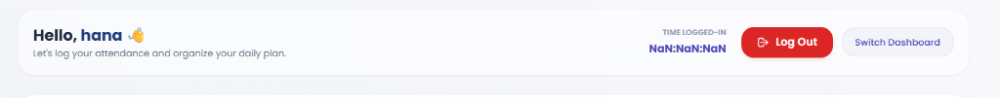
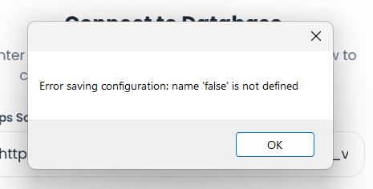
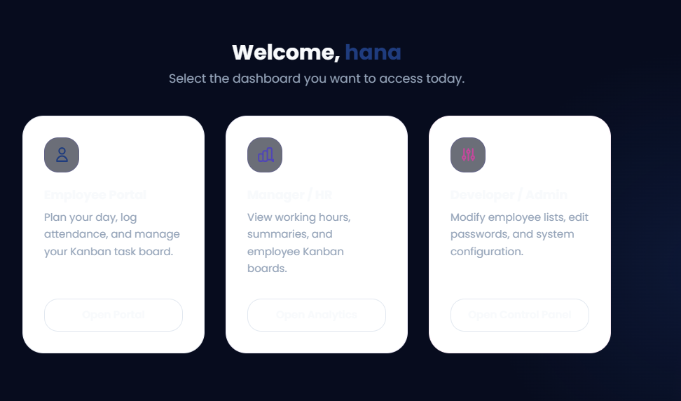

A comprehensive step-by-step workflow guide to logging attendance, submitting daily planners, and syncing Kanban task boards.
Use the index below to navigate the portal features, setup installation steps, and daily employee reporting routines.
| 1. | Introduction to PeriFerry Employee Portal | Page 3 |
| 2. | One-Click Installation Wizard Guide | Page 4 |
| 3. | Daily Attendance: Login & Welcome Console | Page 5 |
| 4. | Planner and Kanban Tasks Workspace | Page 6 |
| 5. | Local Changes & Database Synchronization | Page 7 |
| 6. | Troubleshooting & Session Guidelines | Page 8 |
Always check in immediately upon starting work. All daily tasks must be submitted and synced to guarantee correct working hour tracking. Carry forward leaves accumulate at a rate of 1.0 day/month.
The PeriFerry Employee Portal is a standalone, desktop application designed to track tasks, organize projects, and record attendance. The portal coordinates tasks using a local-first interface, linking directly to a centralized spreadsheet backend via Google Apps Script.
Our portal helps you coordinate your day-to-day workflow with maximum efficiency:

To deploy the portal on your local system, you no longer need complex command prompts, environment setup, or copy-pasting Google Apps Script URL configuration files.
Follow these quick setup steps to prepare your portal workspace:
%LocalAppData%\PeriFerry Employee Portal).
The daily workflow routine begins and ends with check-in and check-out logs. Entering incorrect check-in steps will lead to inaccurate duration statistics on your working sheets.
All tasks submitted during check-in automatically populate the "To Do" column of your board. You can control, organize, and transition these tasks throughout the day.
Instead of lagging system performance with slow network overlays, task shifts are updated instantly in the local UI buffer:

To offer a fluid, responsive user experience, the portal uses a **Local-First Buffer** for Kanban actions. Changes are stored locally in application memory, avoiding network lag while you work.
When you modify tasks (e.g., move a card, complete an item), a blue indicator button appears in the top-right corner of the Kanban container:
The button shows the count of changes (X) currently queued in the local buffer waiting to write to the server database.
Always click the "Sync Changes" button before closing the application or checking out. Unsynced changes will not register on sheets database reports!
Here are standard guidelines and solutions for common questions regarding application behavior.
Q: Why does my check-in time display Na:Na:Na or missing values?
A: This occurs due to cached browser session issues. To resolve it, sign out using the logout icon in the top header panel, close the application, reopen it, and sign back in to start a clean session.
Q: What happens if I forget to click "Sync Changes" before closing the app?
A: Unsynced moves will remain in the local app cache. When you log back in on the same machine, the changes will load, but the spreadsheet database will not show them until you click the Sync button.
Q: How do my leaves accrue?
A: Casual leaves carry forward to the next month and accumulate at a rate of 1.0 day per month (accrual starts fresh from July 2026). Medical leaves accrue at 1.0 day/month but do not carry forward.
For persistent issues, spreadsheet link overrides, or credential changes, please contact your System Developer or HR Manager.